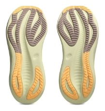
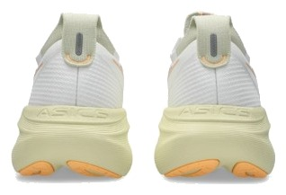

DAILY｜プレミアムクッション
速さを捨てて、4点を取った。
前足部のエネルギーリターン48.6%は、今回の6足で最も低い。スピードの点は1.5しかない。それでも性能点は4.01で、デイリー67足中8位に入った。安定性、グリップ、履き心地で全部取り返した靴である。
故障を避けたい人。ゆっくりしたジョグが中心の人。滑りにくさと安定感を最優先する人。
ペースを上げる練習をする人。走りの軽快さを求める人。


かかとの幅は99.8mmで、6足で最も広い。曲げ剛性も20.2Nと高く、足がぶれにくい構造である。安定性の点は4.5になった。
摩擦係数0.84は6足で最高で、ペガサス 41の3倍以上ある。天候を選ばず走る人には大きい。
反発の数字は低く、フォームも39.3ACと硬めである。衝撃吸収は136SAで、柔らかく沈む靴ではない。しっかりした土台の上で衝撃を受け止める靴と考えたほうがいい。
5点満点。計測値を当サイトのルールで点数にしたもの。
グリップ5.0、履き心地5.0、安定性4.5、耐久性4.5。ジョグの靴に求める項目がよく揃っている。スピードは1.5だが、デイリーの重みでは5%しかない。だから性能点への影響が小さく、4.01まで届いた。この点数の意味を、そのまま読み違えないようにしたい。
高いほど反発する。
高いほど滑りにくい。
| ニンバス 27 | ゴースト 18 | 1080 v14 | |
|---|---|---|---|
| 価格 | ¥20,900 | ¥19,800 | ¥19,800 |
| 実測重量 | 299g | 290g | 285g |
| 衝撃吸収（SA） | 136 | 135 | 142 |
| エネルギーリターン前足部 | 48.6% | 58.1% | 59.4% |
| 摩擦係数 | 0.84 | 0.54 | 0.52 |
| 摩耗深度 | 0.8mm | 0.8mm | 0.6mm |
| 性能点 | 4.01 | 4.11 | 3.84 |
| コスパ点 | 4 | 4.5 | 4 |
方向性が近いのはゴースト 18である。1080 v14はより柔らかく、ニンバスより軽い。安定と滑りにくさならニンバス、柔らかさなら1080で分けるといい。
実測299gと重く、ヒール剛性は4で、かかとはしっかり固定される。摩耗深度は0.8mmで推定寿命は約700km。1kmあたりは約30円で、価格の割に走ってからの費用は高くない。
約300gの重さが気にならないかを確かめたい。週2〜3回のジョグなら大きな問題になりにくいが、短時間で軽快に走りたい人には重く感じる可能性がある。
週2〜3回のジョグを故障なく続けることが目的なら、最有力の一つである。逆に週1回でもペースを上げたいなら、ノヴァブラストやスーパーブラストを先に見たほうがいい。
速くはならない。そのぶん安定して、滑らず、長持ちする。走り続けることを最優先にする人の靴である。
※本記事は海外ラボ（RunRepeat）の計測データとメーカー公表値、当サイトの計算をもとにした分析です。計測はUS9（約27cm）です。1kmあたりの費用は摩耗深度から推定した寿命での概算です。価格は当サイトの掲載値で、変更されている場合があります。